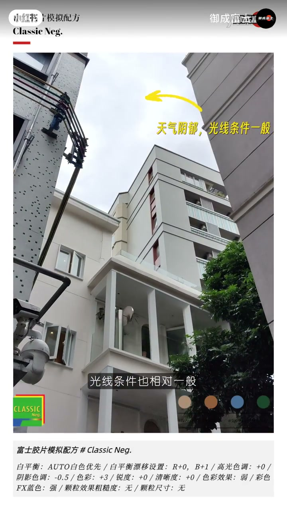
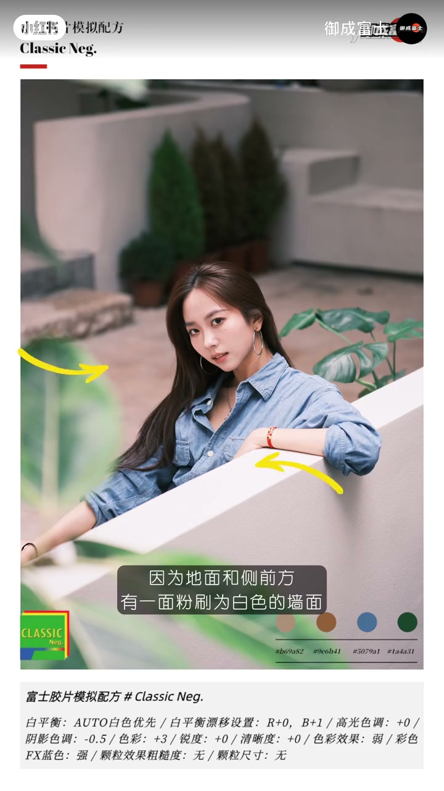

内容要点
「御成富士」针对秋冬阴郁天气分享富士 Classic Neg.（NC） 写真设定：阴天光线一般时，NC 容易出现涂抹感、质感不到位。视频以人像样张推演，字幕与底部配方条给出可照抄参数；口播 Whisper 几乎失效，下列叙述以笔记文案、画面字幕与配方条为准。
知识结构
秋冬难遇完美阳光；阴郁天空光线一般，此时直出 NC 容易涂抹、缺质感。
在光线较复杂的场景，优先利用地面与侧前方白墙反光，给脸部做柔和填充。
白平衡 AUTO 白色优先、WB 偏移 R0/B+1、阴影-0.5、色彩+3、色彩效果弱、彩色FX蓝强、颗粒关。
阴天不是 NC 禁区：先借白墙等环境反光稳住脸部层次，再用「阴影略压、色彩略提、蓝FX加强」的 Classic Neg. 配方压住涂抹感。
00:00–00:20秋冬阴天：完美阳光难求，NC 易涂抹
开场字幕点明现实：想要一个完美阳光的拍摄环境，难度可不小。样张是牛仔衬衫人像，底部始终挂着 Classic Neg. 配方条与四色色板（肤色米、棕、牛仔蓝、深绿）。
紧接着切到仰拍楼宇与灰蒙天空，黄箭头标注「天气阴郁，光线条件一般」。笔记文案补充作者立场：很多爱用 NC 的人会发现，这种天气直出色彩会有涂抹感，质感表现也不到位——所以才需要专门的阴郁光线配方，而不是放弃 NC。

00:20–00:55复杂光下找白墙：侧前方反光当填充
中段人像样张配字幕「在光线较为复杂的场景内」。作者没有空谈「等太阳」，而是指向环境：地面与侧前方有一面粉刷为白色的墙面——黄箭头标出墙面与人物之间的关系，暗示白墙反光可以当柔和正面/侧前方填充，让阴天脸部不至于糊成一片。
这是现场可控的一步：配方改色彩之前，先让脸吃到一点反射光，Classic Neg. 的层次才站得住。视频未给出测光数值，边界是「作者在此场景的做法」，不是所有白墙都自动好用。

00:55–01:33机身配方：白优先 + 阴影-0.5 + 色彩+3
字幕提示「具体的机身设定参数如下」，随后用样张强调关键一项：阴影色调为 -0.5。整段底部配方条保持不变，可视为本片给出的阴天 NC 配方全文（作者观点，按机身菜单照抄）：
富士胶片模拟配方 # Classic Neg.
- 白平衡：AUTO 白色优先；WB 偏移
R:+0 / B:+1 - 高光色调
+0；阴影色调-0.5 - 色彩
+3；锐度+0；清晰度+0 - 色彩效果（Color Chrome）：弱；彩色 FX 蓝色：强
- 颗粒效果：无；颗粒尺寸：无
读法可以很短：阴天略压阴影、把色彩抬一点，再用蓝色 Chrome FX 拉出空气感；白优先 + 轻微偏蓝偏移稳住肤色与冷调天空。Whisper 在参数段几乎听不清，以画面配方条为准。
详细文字转录
Whisper medium 对本片口播几乎失效（仅开场一句可用，后段为乱码）。章节叙述主要依据笔记文案、画面字幕与底部配方条；下列仍按原始分段存档备查。
笔记原文摘要：秋冬季节大部分情况下天气都比较阴郁，光线条件也相对一般，想要有一个有完美阳光的拍摄环境难度可不小。 很多喜欢使用富士胶片模拟模式的NC——也就是「Classic Negative经典负片模式」拍摄的小伙伴，会发现这时用NC拍摄的图片色彩会有涂抹感，质感表现也不到位。 那么这期我们为大家分享一下我们在阴郁光线下使用NC胶片模拟模式的设定配方，喜欢的小伙伴可以先…
秋冬季季来临后想要有一个完美阳光的拍摄环境
[听不清/识别失败] 具体的机
[听不清/识别失败] 小伙夭夭夭夭夭夭夭复夭复复复复复夺��